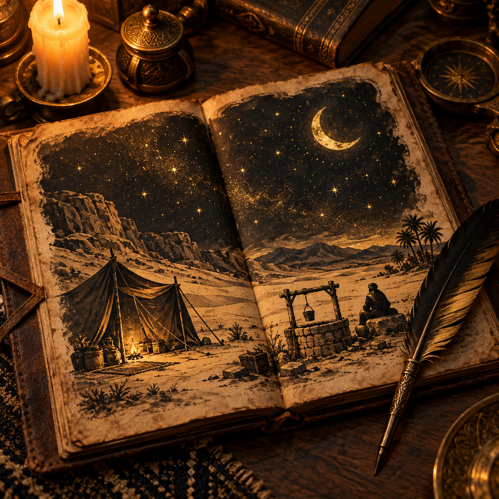
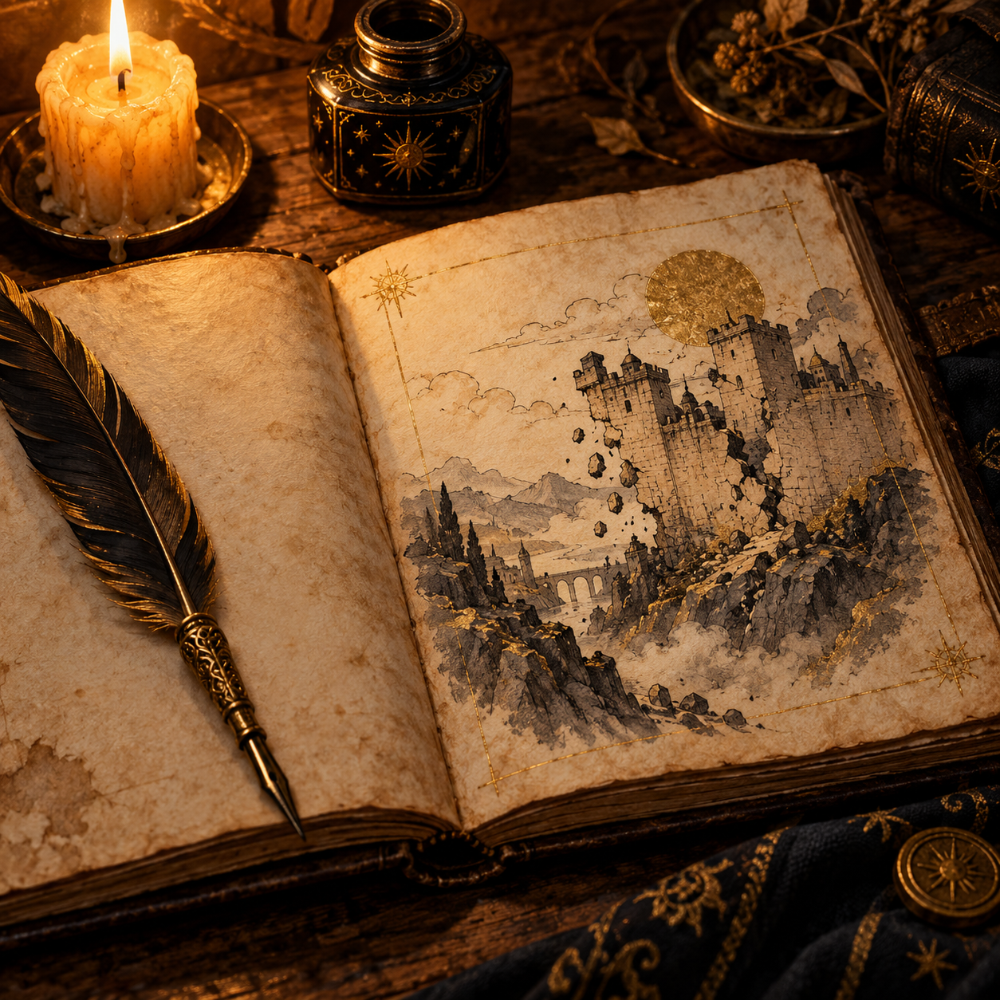
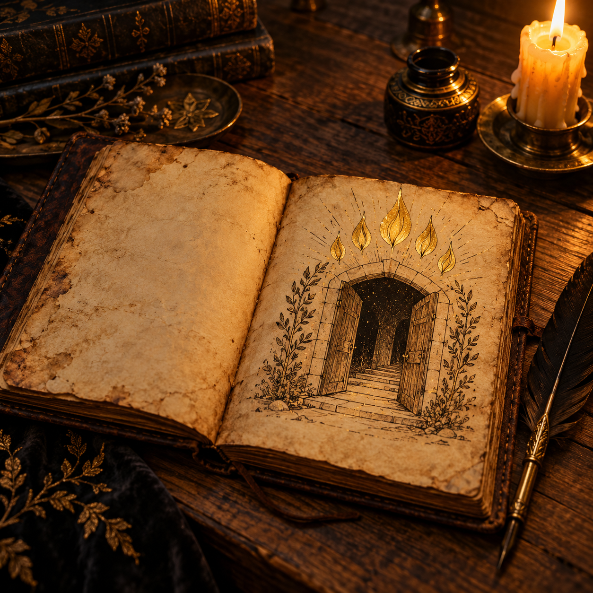

A quiet workbook for walking back through the places and stories you've explored in the atlas — with room to think, and no one grading the answers but you.
How to use this companion
This isn't a quiz. It's a place to slow down after you've looked at a map or read a scene in Scripture Mapped, and let it settle somewhere beyond the page.
Each of the nine sections below mirrors a part of the atlas, in the same order — from Eden to Paul's voyage to Rome. Open the matching section in the atlas first, then come back here.
Read or revisit that section of the atlas.
Answer the reflection questions in your own words — there's no wrong length.
Tick "I've reviewed this section" when you're done with it.
Everything you write is saved automatically in this browser, so you can close this page and pick up right where you left off.
Section 1 of 9
Beginnings: A World Before Fixed Borders
Eden and its rivers, Cain's road to the Land of Nod, the Flood traditions of the Ancient Near East, the Ararat highlands, and Babel among the cities of Shinar.

Section 2 of 9
Patriarchs: Journeys, Wells and Promises
Ur to Haran, Haran to Canaan, the Jordan Plain and Sodom, Moriah and the binding of Isaac, and Jacob's family route down into Egypt.
Section 3 of 9
Exodus: Leaving Egypt
Moses and the Nile, the burning bush in Midian, Passover and the night of departure, the crossing of the Sea, and the wilderness camp around the Tabernacle.

Section 4 of 9
Settlement and Judges
Crossing the Jordan opposite Jericho, the fall of Jericho and Ai, Gibeon's alliance, Hazor's trade network in the north, and the tribal zones of the hill country.
Section 5 of 9
Kingdoms: Power, Worship and Division
The Valley of Elah, Saul and the highlands around Gibeah, David's City of David by the Gihon Spring, Solomon's trade network and Temple, and the eventual split into Israel and Judah.
Section 6 of 9
Exile and Return
The fall of Samaria to Assyria, Sennacherib's siege of Lachish and Jerusalem, the fall of Jerusalem to Babylon, Judean communities living in exile at Al-Yahudu, and the Persian-era return and rebuilding.
Section 7 of 9
Jesus: Galilee to Jerusalem
Bethlehem and Nazareth, Capernaum on the Sea of Galilee, the Jordan Valley and the wilderness, the steep ascent from Jericho to Jerusalem, and the final week in the city.

Section 8 of 9
Early Church: Jerusalem Outward
Pentecost in a festival-crowded Jerusalem, the public and private life of the early community, Philip's road through Samaria to Gaza, Caesarea's harbour, and the church taking root in Antioch.
Section 9 of 9
Paul: Roads, Ports and Communities
Damascus, Tarsus and Antioch as Paul's formative cities, the first journey through Cyprus and Pisidian Antioch, Philippi-Athens-Corinth, Ephesus and the third journey, and the voyage to Rome by way of Malta.
✦Keep Going
Walking the whole road
From the rivers of Eden to a shipwreck off Malta — that's the whole sweep of the story. Come back to any section whenever you want; everything you've written is still here, waiting for you.
Keeps everything you've written so far as a plain text file, for your own records.
Your answers are stored privately in this browser only. Nothing is sent anywhere.